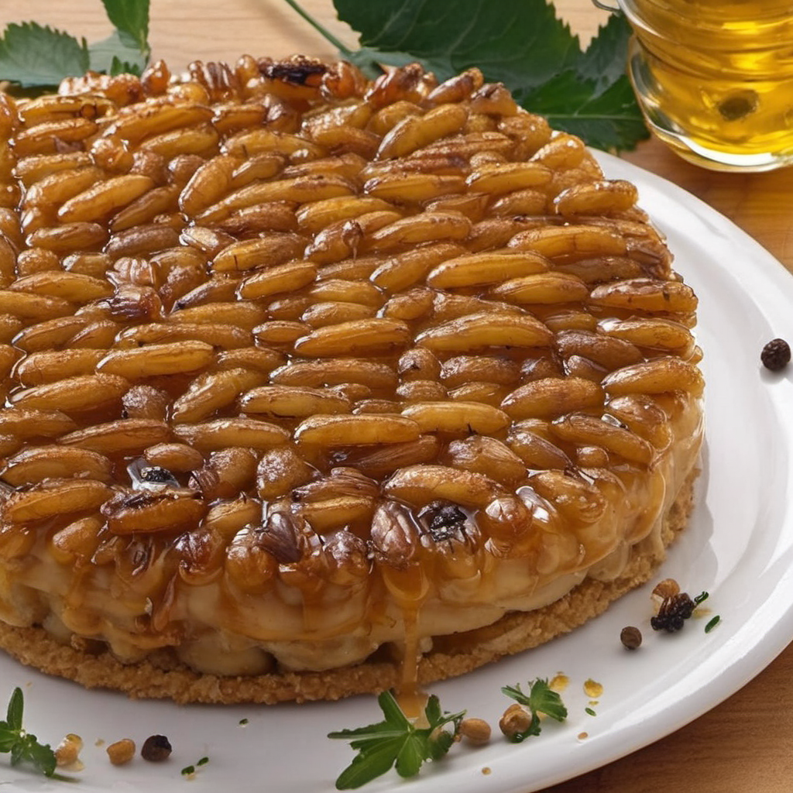

Bolarva
Delicie-se com uma sobremesa inovadora e audaciosa, nossa releitura de um clássico com um toque de alta gastronomia. Apresentamos o "Bolarva", uma experiência sensorial que desafia as convenções e celebra a biodiversidade
A cobertura é onde a mágica acontece, larvas de mosca, criadas em abmientes controlados para garantir a pureza e a segurança alimentar, são delicadamente caramelizadas com açúcar, o prato é finalizado com uma leve pitada de sal marinho, que realça os sabores e equlibra a doçura da caramelização, além de um toque de raspas de limão siciliano que adiciona uma nota cítrica e fresca ao conjunto. Servido com uma quenelle de sorvete de baunilha de Madagascar, essa sobremesa promete uma viagem gastronômica inesquecível, onde tradição e inovação se encontram em perfeita.